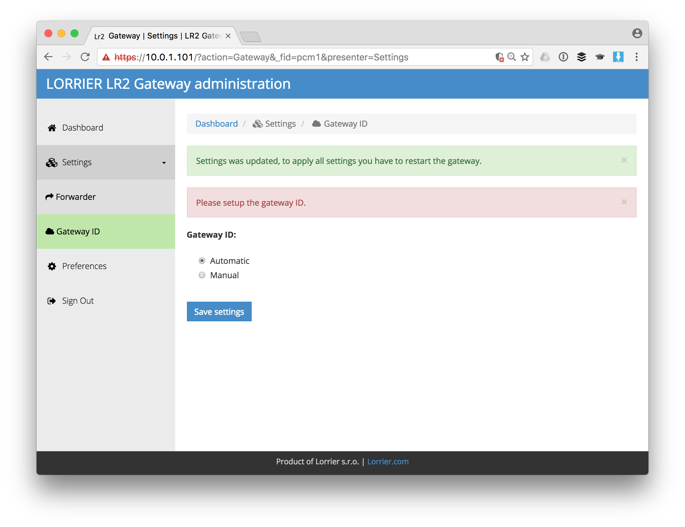

Setup
Here’s how you setup the Lorrier LR2 for The Things Network.
General Setup
This guide follows most of the LR2 Quick Settings Guide. For more details and troubleshooting see the documentation in the Lorrier LR2 Repository.
-
Connect the antenna to your LR2.
Connecting the LR2 to power (over ethernet) without antenna or appropriate attenuator connected will damage the device.
-
Connect your LR2 to the ethernet and power using the enclosed POE (Power Over Ethernet) adapter. Booting takes about 60 seconds.
The casing does not have external LEds. There have been cases where the LED on the POE adapter was on while the LR2 itself wasn’t. If the next steps fail, open the casing to verify the LEDs on the boards are also on. If they are not, connect the power directly to the board and order anew POE adapter.
-
The LR2 by default is configured with
192.168.1.2as static IP address. If this doesn’t match the IP range of the network you will connect it to, you will need to change this first.- Follow Change Static IP Address if needed.
-
If you’re not connected via Winbox tools already to change the IP address then do so now to change your password.
- Go to System > Password.
- The default password is
lorrier.
-
Change your BeagleBone Green (BBG) passwords.
-
Connect to the LR2 via SSH.
- As address use the LR2’s (new) static IP plus
:2222for the port. - The default username is
rootand passwordlorrier.
- As address use the LR2’s (new) static IP plus
-
To change the passwords type
passwd rootandpasswd debian.
-
Configuration
-
Open the LR2 web interface in your browser.
- As address use the LR2’s (new) static IP.
- You might need to authorize the safety certificate.
-
Login with the defaults username
adminand password `lorrier. -
You will be asked to select your Forwarder / Service. If you come back later, select Forwarder from the left menu. Then select The Things Network Servers EU 863-870 Mhz and click Save settings:

-
On the next screen let the LR2 generate a Gateway ID or set one manual and click Save settings:

-
When you get back to the dashboard, take note of the generated Gateway ID:

-
In the left menu, select Preferences to change the default password:

-
Go back to the Dashboard and click Apply settings & Reboot
-
Register your gateway using the Gateway ID.
👏 Your gateway is now connected to The Things Network!